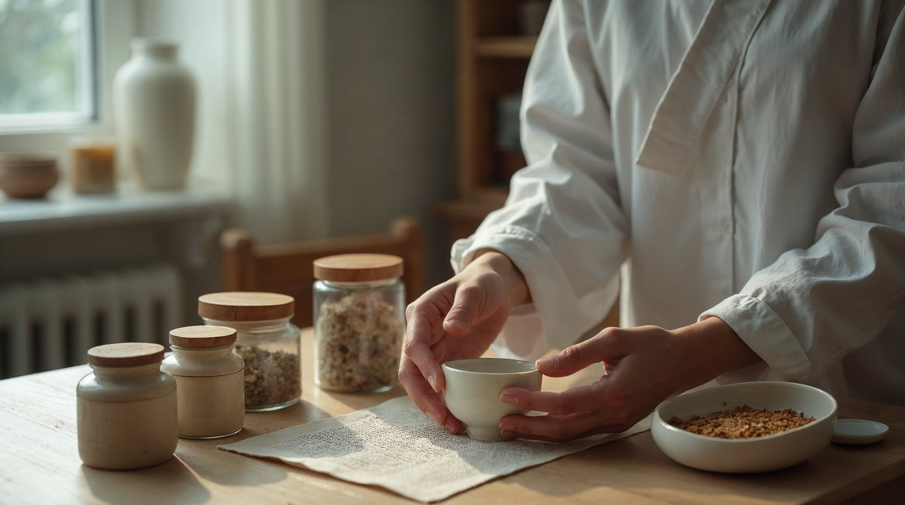

이종호 한의사 감수좋은꿈참사랑한의원 대표원장 (한의사 면허번호 19769)발행 2026-11-25 · 수정 2026-11-26
이 글의 차례
- 왜 바쁜 시기 뒤에 주기가 늦어질 수 있나요
- 늦어진 것과 건너뛴 것은 어떻게 구분하나요?
- 스스로 점검해 보는 목록
- 먼저 이렇게 여쭙니다
- 임신 테스트는 언제 하면 좋을까요?
- 일상에서 먼저 해 볼 수 있는 것
- 잠은 어떻게 되찾으면 좋을까요?
- 식사는 어떻게 챙기면 좋을까요?
- 몸을 따뜻하게 하는 생활은 어떻게 하나요?
- 마음의 긴장은 어떻게 내려놓나요?
- 회사에서 할 수 있는 작은 습관은 무엇인가요?
- 주기 앱은 어떻게 쓰면 도움이 될까요?
- 가족이나 동료에게는 어떻게 말할까요?
- 연말 술자리는 어떻게 조절하나요?
- 출장과 장거리 이동이 많았다면 무엇이 달라지나요?
- 운동은 늘릴까요, 줄일까요?
- 생리 전 불편이 함께 심해졌다면요?
- 피임약을 먹고 있다면 무엇이 다를까요?
- 다음 주기는 언제쯤 기다려 보면 될까요?
- 새해에는 무엇을 이어 가면 좋을까요?
- 한의원에서 함께 살필 수 있는 경우
- 이렇게 기록해 오시면 상담이 쉬워집니다
- 이런 증상은 먼저 확인이 필요합니다
바쁜 연말을 보낸 뒤 생리가 늦어진다면, 임신 가능성을 먼저 확인하고 지난 한두 달의 잠과 식사, 체중 변화를 돌아보는 것이 순서입니다. 12월에는 마감과 회식, 장거리 이동이 겹쳐 평소보다 늦게 자고 끼니를 거르는 날이 많아집니다. 그 뒤 주기가 일주일 넘게 밀리면 걱정이 커지기 마련입니다.
예를 들어 평소 28일 주기이던 분이 야근과 출장이 겹친 달에 35일을 넘기는 식입니다. 다음 달에는 다시 30일 안쪽으로 돌아오기도 하고, 생활이 정리되지 않으면 몇 달 동안 들쭉날쭉하게 이어지기도 합니다. 그래서 한 번의 늦어짐보다 앞으로 몇 번의 흐름을 함께 보는 것이 중요합니다.
생리가 늦어지면 머릿속이 복잡해집니다. 혹시 몸에 큰 문제가 생긴 건 아닌지, 이번 달만 그런 건지, 기다려야 하는지 병원에 가야 하는지 판단이 서지 않아 하루하루 달력만 보게 됩니다.
저는 이럴 때 걱정을 순서대로 정리해 보자고 말씀드립니다. 먼저 확인할 것, 그다음 돌아볼 것, 그리고 기록하며 지켜볼 것을 나누면, 막막한 마음이 한결 가벼워집니다. 이 글도 그 순서를 따라 하나씩 정리해 보겠습니다.
왜 바쁜 시기 뒤에 주기가 늦어질 수 있나요
- 잠이 줄고 긴장이 이어지면 몸의 주기 리듬이 흔들릴 수 있습니다.
- 끼니를 거르거나 급하게 체중이 변하면 주기에 영향을 줄 수 있습니다.
- 잦은 음주와 늦은 식사가 몸의 회복을 늦춥니다.
- 추위로 활동이 줄고 몸이 차게 느껴지는 분도 있습니다.
몸은 바쁘고 긴장된 시기를 일종의 비상 상황처럼 받아들이기도 합니다. 잠이 모자라고 끼니가 불규칙한 날이 몇 주 이어지면, 몸은 당장 버티는 데 힘을 쓰느라 주기를 조금 미루는 쪽으로 반응할 수 있습니다.
그래서 바쁜 시기가 지나고 생활이 돌아오면 주기도 차츰 제자리를 찾는 분이 많습니다. 다만 바쁜 시기가 끝나도 생활이 정리되지 않으면, 주기의 흔들림도 함께 길어질 수 있습니다.
늦어진 것과 건너뛴 것은 어떻게 구분하나요?
평소보다 며칠에서 일주일쯤 늦게 시작했다면 주기가 늦어진 것입니다. 이런 일은 일 년에 한두 번쯤 바쁘거나 아팠던 달에 겪는 분이 적지 않습니다.
한 달을 통째로 건너뛰고 다음 달에 시작했다면, 그 사이 무슨 일이 있었는지 더 자세히 돌아볼 필요가 있습니다. 체중이 크게 변했는지, 잠이 몇 주째 무너졌는지, 운동량이 갑자기 늘었는지를 살펴봅니다.
주기가 매달 들쭉날쭉하고 양이나 기간도 크게 달라진다면, 연말의 바쁨만으로 보기보다 진료를 받아 보시길 권합니다. 몇 달의 기록이 있으면 구분이 훨씬 쉬워집니다.
스스로 점검해 보는 목록
- 최근 한 달 동안 밤 열두 시 넘어 잠든 날이 절반을 넘는다
- 끼니를 거른 날이 일주일에 세 번 넘는다
- 한두 달 사이 체중이 눈에 띄게 늘거나 줄었다
- 술자리가 일주일에 두 번 넘게 이어졌다
- 운동을 갑자기 많이 늘리거나 완전히 멈췄다
- 손발과 아랫배가 차다고 느끼는 날이 많다
- 마지막 생리 시작일을 정확히 기억하기 어렵다
해당하는 항목이 많다면 생활을 먼저 정리하며 주기를 지켜보시길 권합니다. 이 목록은 진단이 아니라 최근 생활을 돌아보는 도구로 써 주세요. 표시한 항목 가운데 가장 바꾸기 쉬운 것 하나를 골라 이번 주에 먼저 시작해 보세요. 한 가지가 자리를 잡으면 다음 것을 더하면 됩니다.
먼저 이렇게 여쭙니다
- 마지막 생리 시작일이 언제였고 평소 주기는 며칠인가요?
- 임신 가능성이 있나요? 검사를 해 보셨나요?
- 최근 한두 달 사이 잠과 식사, 체중이 어떻게 달라졌나요?
- 아랫배 통증이나 평소와 다른 분비물이 있나요?
- 복용 중인 약이나 피임약이 있나요?
임신 테스트는 언제 하면 좋을까요?
임신 가능성이 조금이라도 있다면, 생리 예정일이 지난 뒤 테스트기로 먼저 확인하는 것이 순서입니다. 아침 첫 소변으로 하면 결과를 읽기 쉽다고 알려져 있습니다.
너무 이른 시기에 하면 결과가 분명하지 않을 수 있습니다. 음성이 나왔는데도 생리가 계속 시작되지 않는다면 며칠 뒤 다시 해 보거나, 산부인과에서 확인받으세요.
임신을 확인하기 전에는 새로운 약이나 한약을 시작하지 않는 것이 좋습니다. 결과에 따라 앞으로의 계획이 달라지기 때문입니다.
일상에서 먼저 해 볼 수 있는 것
- 임신 가능성이 있으면 먼저 검사로 확인하기
- 잠드는 시각을 30분씩 당겨 일주일 지켜보기
- 끼니를 거르지 않고 따뜻한 음식으로 제때 먹기
- 주기 앱이나 달력에 시작일과 양, 통증을 적기
- 아랫배와 발을 따뜻하게 하고 가볍게 걷기
잠은 어떻게 되찾으면 좋을까요?
연말 내내 늦게 잤다면 하루아침에 일찍 자기는 어렵습니다. 잠드는 시각을 한 번에 두 시간 당기기보다 사흘마다 삼십 분씩 당겨 가는 쪽이 몸이 따라오기 쉽습니다.
일어나는 시각을 먼저 고정하는 것도 방법입니다. 주말에도 평일과 비슷한 시각에 일어나 아침 햇볕을 쬐면, 밤에 졸음이 오는 시각도 차츰 앞당겨집니다.
잠들기 한 시간 전에는 휴대전화와 노트북을 멀리하고, 따뜻하게 씻은 뒤 불을 어둡게 해 주세요. 바쁜 하루를 정리하는 짧은 의식이 있으면 머릿속도 함께 꺼지기 쉽습니다.
식사는 어떻게 챙기면 좋을까요?
바쁜 시기에는 커피와 빵으로 아침을 때우고, 점심은 급하게, 저녁은 술자리나 늦은 야식으로 이어지기 쉽습니다. 이런 날이 몇 주 쌓이면 몸이 충분히 채워지지 못합니다.
하루 세 끼를 비슷한 시각에, 밥과 국, 단백질 반찬, 채소를 고루 갖춰 드시는 것을 목표로 해 보세요. 한 끼라도 제대로 챙기는 날을 늘려 가면 됩니다.
체중을 줄이려고 끼니를 크게 줄이고 있다면, 이 시기만큼은 속도를 늦추는 것을 권합니다. 급한 체중 변화는 주기에 영향을 줄 수 있습니다.
몸을 따뜻하게 하는 생활은 어떻게 하나요?
손발과 아랫배가 차다고 느끼는 분은 겨울에 그 느낌이 더 커집니다. 배와 허리를 덮는 옷을 입고, 발은 양말로 따뜻하게 감싸 주세요.
차가운 음료 대신 따뜻한 물이나 차를 자주 마시고, 하루 이십 분쯤 햇볕이 있을 때 걸어 보세요. 걷기는 몸을 데우고 긴장을 푸는 데 함께 도움이 됩니다.
잠들기 전에 따뜻한 물에 발을 담그거나 반신욕을 짧게 하는 것을 편하게 여기는 분도 있습니다. 너무 뜨겁지 않게, 십 분 안쪽으로 해 주세요.
마음의 긴장은 어떻게 내려놓나요?
연말은 일이 몰리고 사람을 많이 만나는 시기입니다. 몸만큼 마음도 지쳐 있는 경우가 많습니다. 하루 중 오 분만이라도 아무것도 하지 않고 숨을 고르는 시간을 만들어 보세요.
눈을 감고 숨을 넷까지 들이쉬고 여섯까지 내쉬기를 열 번 하는 것만으로도 어깨가 내려가는 것을 느낄 수 있습니다. 걱정이 많아 잠이 안 오는 밤에는 걱정을 종이에 적어 두고 내일 보기로 하는 것도 방법입니다.
회사에서 할 수 있는 작은 습관은 무엇인가요?
야근이 이어지는 주에도 점심은 자리에서 일하며 먹기보다 잠깐이라도 자리를 떠나 먹어 보세요. 십 분이라도 밖을 걸으며 햇볕을 쬐면 오후의 피로가 조금 덜합니다.
책상 서랍에 커피 대신 따뜻한 차를 두고, 오후 세 시 이후로는 카페인을 줄여 보세요. 늦은 오후의 커피는 그날 밤 잠을 얕게 만들 수 있습니다.
퇴근 시각이 늦어지는 날에는 저녁을 간단하게라도 제때 먹고, 집에 돌아가 늦게 다시 먹는 일을 줄이는 것이 좋습니다. 늦은 식사는 잠과 소화를 함께 무겁게 합니다.
주기 앱은 어떻게 쓰면 도움이 될까요?
주기 앱은 시작일만 적는 것보다 양, 통증, 기분, 잠을 함께 적을 때 더 쓸모가 있습니다. 하루에 한 번, 잠들기 전에 삼십 초만 투자해 짧게 남겨 보세요.
앱이 알려 주는 예정일은 지난 기록을 바탕으로 계산한 짐작일 뿐입니다. 예정일이 지났다고 바로 불안해하기보다, 그달의 생활이 어땠는지 함께 돌아보는 데 쓰시면 됩니다.
가족이나 동료에게는 어떻게 말할까요?
몸이 흔들리는 시기에는 일을 조금 덜어 달라고 말하기가 쉽지 않습니다. 그래도 가까운 사람에게 요즘 잠과 식사가 무너져 몸이 힘들다고 털어놓으면, 생각보다 많은 도움을 받을 수 있습니다.
집안일을 나누거나 모임 일정을 조금 줄이는 것만으로도 쉬는 시간이 생깁니다. 혼자 다 해내려 하기보다 이번 달은 조금 내려놓는 것도 몸을 돌보는 방법입니다.
연말 술자리는 어떻게 조절하나요?
술은 잠을 얕게 만들고, 늦은 시각의 안주는 소화를 늦춥니다. 모임이 잦은 주에는 일주일에 술을 마시는 날을 미리 정해 두고, 나머지 날은 일찍 귀가해 쉬는 날로 비워 두세요.
술자리에서는 술 한 잔에 물 한 잔을 곁들이고, 다음 날 아침은 거르지 말고 따뜻한 국물로 속을 채워 주세요. 술을 마신 날은 주기 기록에도 짧게 표시해 두시면 좋습니다.
출장과 장거리 이동이 많았다면 무엇이 달라지나요?
연말에는 지방 출장이나 해외 일정, 귀성 이동이 겹치기도 합니다. 잠자리가 바뀌고 시차가 생기면 몸의 하루 리듬이 흔들리고, 그 흔들림이 주기에도 이어질 수 있습니다.
이동이 많은 달에는 도착한 곳에서도 일어나는 시각과 식사 시각을 평소와 비슷하게 맞추려고 해 보세요. 비행기나 기차 안에서는 물을 자주 마시고, 한두 시간마다 일어나 몸을 움직여 주세요.
시차가 큰 곳에 다녀왔다면 돌아온 뒤 며칠은 아침 햇볕을 충분히 쬐고, 낮잠은 짧게 자는 것이 리듬을 되찾는 데 도움이 됩니다.
운동은 늘릴까요, 줄일까요?
바쁜 시기에 운동을 완전히 놓았다면, 하루 이십 분 걷기부터 다시 시작해 보세요. 가벼운 움직임은 잠을 돕고 몸을 데우며, 긴장을 푸는 데도 좋습니다.
반대로 연말을 앞두고 체중을 줄이겠다며 운동을 갑자기 많이 늘린 분이라면, 식사가 그만큼 따라가고 있는지 살펴보세요. 먹는 양은 줄이고 운동량만 크게 늘리면 몸이 부족함을 느껴 주기가 흔들릴 수 있습니다.
생리 전 불편이 함께 심해졌다면요?
주기가 늦어진 달에 생리 전 붓기, 가슴 뭉침, 예민함, 단것 당김이 평소보다 심했다는 분도 있습니다. 바쁜 시기의 피로와 긴장이 이런 불편을 키우기도 합니다.
생리 전 일주일 동안 어떤 불편이 있었는지 짧게 적어 보세요. 몇 달 모이면 내 몸의 흐름이 보이고, 불편이 큰 시기에 일정을 조금 가볍게 잡는 식으로 미리 준비할 수 있습니다.
피임약을 먹고 있다면 무엇이 다를까요?
피임약을 드시는 분은 약을 먹는 방식에 따라 출혈의 모양이 평소와 다를 수 있습니다. 바쁜 시기에 약을 빠뜨리거나 시각이 들쭉날쭉했다면, 그 이야기도 함께 적어 주세요.
약을 먹으면서 생리가 늦어진다면 혼자 판단해 끊거나 바꾸지 말고, 처방한 산부인과와 먼저 상의하시길 권합니다. 진료 때도 약 이름과 먹는 방식을 알려 주시면 이야기가 수월합니다.
다음 주기는 언제쯤 기다려 보면 될까요?
이번 달 늦게 시작했다면 다음 주기는 이번 시작일부터 다시 세어 보세요. 생활을 정리하고 두세 번의 주기를 지켜보면 내 몸이 제자리를 찾아가는지 알 수 있습니다.
기다리는 동안 달력만 들여다보며 불안해하기보다, 오늘 잠과 식사를 어떻게 챙겼는지에 마음을 두시길 권합니다. 걱정이 크다면 혼자 견디지 말고 산부인과나 한의원에서 상담을 받아 보세요.
새해에는 무엇을 이어 가면 좋을까요?
연말이 끝나면 다시 일상이 시작됩니다. 이번에 흔들렸던 경험을 바탕으로, 바쁜 시기에도 지킬 최소한의 약속을 정해 보세요. 예를 들어 열두 시 전에 눕기, 아침 거르지 않기, 술자리는 일주일에 두 번까지 같은 것입니다.
내년 연말에 다시 바쁜 시기가 오더라도, 이 약속을 기억하고 있으면 몸이 덜 흔들립니다. 주기 기록은 일 년 내내 이어 가시길 권합니다.

한의원에서 함께 살필 수 있는 경우
- 바쁜 시기마다 주기가 밀리는 일이 반복되는 경우 잠과 식사, 몸의 온기를 함께 살핍니다.
- 생리 전 붓기와 피로, 예민함이 심한 경우 주기 전체의 흐름을 함께 살핍니다.
- 손발이 차고 아랫배가 묵직한 경우 필요하다고 판단될 때 복진으로 함께 살핍니다.
좋은꿈참사랑한의원에서는 맥부터 짚으며 하루의 흐름과 불편한 상황을 여쭙고, 필요하다고 판단될 때 설진·복진을 더해 살핀 뒤, 상태에 맞춰 침이나 한약 상담 등을 정합니다. 귀가 전에는 집에서 지켜볼 점과 다음에 확인할 일을 알려 드립니다. 임신 가능성이나 산부인과 진료 중인 내용이 있으면 먼저 여쭙니다.
처음 오시면 주기 이야기와 함께 잠, 소화, 대소변, 몸의 온기, 마음의 긴장까지 두루 여쭙니다. 주기는 몸 전체의 흐름과 이어져 있어, 한 가지만 보아서는 실마리를 찾기 어렵기 때문입니다.
한약 상담을 하게 되면 드시는 약과 피임약, 영양제를 먼저 확인합니다. 임신 중이거나 임신을 계획하고 있다면 꼭 먼저 알려 주시고, 다니는 산부인과와도 상의해 주세요.
이렇게 기록해 오시면 상담이 쉬워집니다
- 최근 서너 번의 생리 시작일과 기간
- 잠든 시각과 끼니, 체중의 변화
- 통증이나 분비물의 변화
- 복용 중인 약, 피임약, 영양제
주기 앱을 쓰신다면 화면을 그대로 보여 주셔도 좋습니다. 여기에 바빴던 주와 술자리가 있었던 날을 표시해 두면, 생활의 변화와 주기가 어떻게 이어지는지 함께 보기 쉬워집니다.
이런 증상은 먼저 확인이 필요합니다
- 심한 아랫배 통증이 있거나, 임신 가능성이 있는데 출혈이 있는 경우
- 석 달 넘게 생리가 없는 경우
이런 신호가 있으면 한의원보다 가까운 병원이나 응급실을 먼저 찾으세요.

여쭙는 것
- 마지막 생리 시작일이 언제였고 평소 주기는 며칠인가요?
- 임신 가능성이 있나요? 검사를 해 보셨나요?
- 최근 한두 달 사이 잠과 식사, 체중이 어떻게 달라졌나요?
생활에서 해 볼 것
- 임신 가능성이 있으면 먼저 검사로 확인하기
- 잠드는 시각을 30분씩 당겨 일주일 지켜보기
- 끼니를 거르지 않고 따뜻한 음식으로 제때 먹기
한의원에서 함께 살필 것
- 바쁜 시기마다 주기가 밀리는 일이 반복되는 경우 잠과 식사, 몸의 온기를 함께 살핍…
- 생리 전 붓기와 피로, 예민함이 심한 경우 주기 전체의 흐름을 함께 살핍니다.
- 손발이 차고 아랫배가 묵직한 경우 필요하다고 판단될 때 복진으로 함께 살핍니다.
먼저 확인이 필요한 신호
- 심한 아랫배 통증이 있거나, 임신 가능성이 있는데 출혈이 있는 경우
- 석 달 넘게 생리가 없는 경우
한눈에 보는 표
| 구분 | 핵심 |
|---|---|
| 여쭙는 것 | 마지막 생리 시작일이 언제였고 평소 주기는 며칠인가요? 임신 가능성이 있나요? 검사를 해 보셨나요? |
| 생활에서 해 볼 것 | 임신 가능성이 있으면 먼저 검사로 확인하기 잠드는 시각을 30분씩 당겨 일주일 지켜보기 |
| 한의원에서 함께 살필 것 | 바쁜 시기마다 주기가 밀리는 일이 반복되는 경우 잠과 식사, 몸의 온기를 함께 살핍니다. 생리 전 붓기와 피로, 예민함이 심한 경우 주기 전체의 흐름을 함께 살핍니다. |
| 먼저 확인이 필요한 신호 | 심한 아랫배 통증이 있거나, 임신 가능성이 있는데 출혈이 있는 경우 석 달 넘게 생리가 없는 경우 |
자주 묻는 질문
며칠 늦어졌을 때 무엇부터 하면 되나요?
임신 가능성이 있으면 먼저 검사로 확인해 주세요. 그다음 마지막 생리 시작일과 최근 잠·식사 변화를 적어 두시면 흐름을 살피기 쉽습니다.
한약으로 주기를 맞출 수 있나요?
결과를 미리 약속할 수는 없습니다. 진찰과 상담을 거쳐 몸 상태를 살핀 뒤 필요하다고 판단될 때 방법을 함께 정합니다.
다이어트 중인데 관련이 있나요?
급하게 체중이 줄면 주기가 달라질 수 있습니다. 식사 내용을 함께 살펴보면 이야기가 쉬워집니다.
좋은꿈참사랑한의원은 재진 때 지난번 이야기부터 이어서 여쭙니다. 진료시간과 예약은 오시는 길에서 확인하세요.
어디서 상담받을 수 있나요?
좋은꿈참사랑한의원은 서울 동작구 만양로2길 2 신성빌딩 3층·5층(서울 동작구 상도동, 7호선 상도역 3번 출구 근처)에 있습니다. 한의사 3명(이종호 대표원장, 조영기 수석진료원장, 정원영 진료원장)이 진료합니다. 진료시간은 평일 09:30~20:00(점심 13:00~14:00), 토·일·공휴일 09:30~15:00이며, 방문 전 전화로 확인을 권합니다. 예약은 네이버 예약, 카카오톡 상담, 전화 02-815-7510로 받습니다.
이 글은 일반적인 건강 정보이며 개인의 진단이나 치료를 대신하지 않습니다. 증상이 있거나 복용 중인 약이 있다면 진료를 통해 확인하세요. 치료 효과는 개인마다 다를 수 있습니다.
작성 기준: 일반적으로 알려져 있는 건강 정보를 참고해 정리했습니다(대표원장 감수). 증상 기록은 1~2주 동안 하루 1회, 비슷한 시간에 적어 오시면 지난 상태와 비교하기 쉽습니다.